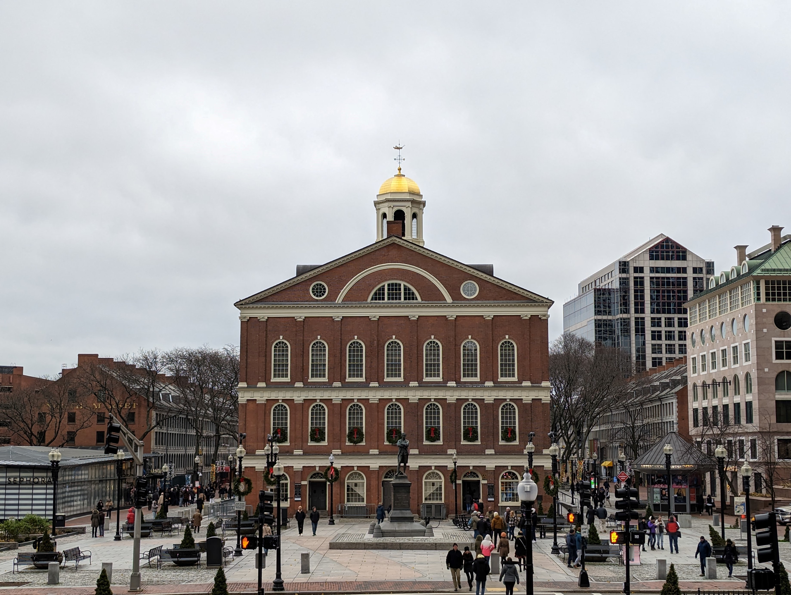
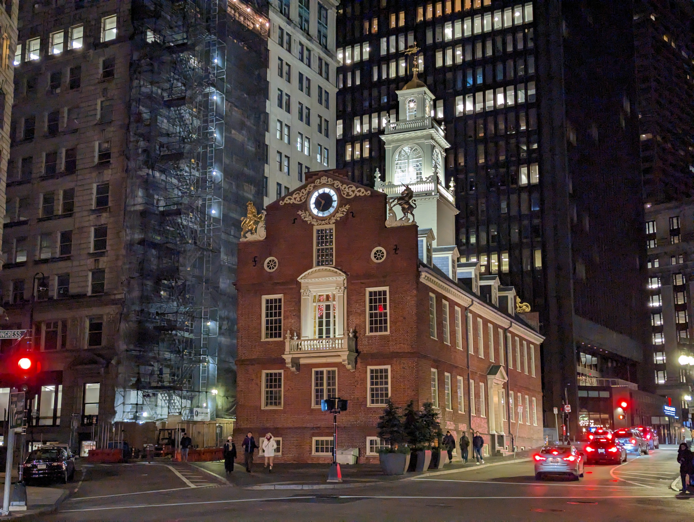

Manhattan
Boston is real blast! The city's residents say its best in America, and while I dont agree, I can say that it is the most European city in the country. I appriciate the citiy's great public transit, its walkablity, and its historic significance.
Enjoy some photos of Boston taken in the fall of 2022!
 